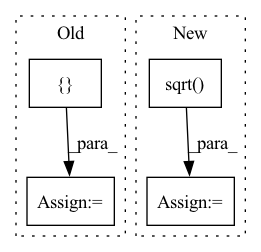

Pattern ID :2321
Before Change
// https://www.biorxiv.org/content/10.1101/2020.11.27.401232v1.full.pdf
if eigen == True:
if weights is None:
preds_3d = []
for bi in range(pre_dist_mat.shape[0]):
D = pre_dist_mat[bi]**2
M = D[:1, :] + D[:, :1] - D
u,s,v = torch.svd_lowrank(M/2)After Change
u = torch.stack([svd[0] for svd in svds], dim=0)
s = torch.stack([svd[1] for svd in svds], dim=0)
v = torch.stack([svd[2] for svd in svds], dim=0)
preds_3d = torch.transpose( torch.bmm(u, torch.diag_embed(s).sqrt() )[..., :3], -1, -2)
return preds_3d, torch.zeros_like(torch.stack(his, dim=0))
else:In pattern: SUPERPATTERN
Frequency: 3
Non-data size: 4
Instances Fragment ID: 9873987
Project Name: lucidrains/alphafold2
Commit Name: c3e564efd689bff4df9759b2855bdbb6dcd1b67b
Time: 2021-04-25
Author: ericalcaide1@gmail.com
File Name: alphafold2_pytorch/utils.py
M Class Name: AnonimousClass
N Class Name: AnonimousClass
M Method Name: mds_torch(6)
N Method Name: mds_torch(6)
M Parent Class:
N Parent Class:
M File Name: alphafold2_pytorch/utils.py
N File Name: alphafold2_pytorch/utils.py
M Start Line: 650
M End Line: 668
N Start Line: 645
N End Line: 671
Before Change
self.state_rank = state_rank
self.measure_rank = measure_rank
self.full_idx = []
empty_idx = set(empty_idx)
for r in range(self.state_rank):
for c in range(self.measure_rank):
if (r, c) in empty_idx:After Change
low_rank = int(low_rank)
else:
ub = (len(self.full_states) * self.measure_rank) / (len(self.full_states) + self.measure_rank)
low_rank = int(math.sqrt( ub) )
self.lr1 = torch.nn.Parameter(.1 * torch.randn(len(self.full_states), low_rank))
self.lr2 = torch.nn.Parameter(.1 * torch.randn(low_rank, self.measure_rank))
else: Fragment ID: 9873985
Project Name: strongio/torchcast
Commit Name: f47fb0ea7f8de78c4034c228363a96dc283c6d75
Time: 2021-06-28
Author: jacob.dink@strong.io
File Name: torchcast/exp_smooth/smoothing_matrix.py
M Class Name: SmoothingMatrix
N Class Name: SmoothingMatrix
M Method Name: __init__(8)
N Method Name: __init__(8)
M Parent Class: torch.nn.Module
N Parent Class: torch.nn.Module
M File Name: torchcast/exp_smooth/smoothing_matrix.py
N File Name: torchcast/exp_smooth/smoothing_matrix.py
M Start Line: 61
M End Line: 88
N Start Line: 60
N End Line: 84
Before Change
raise ValueError("in_channels must be divisible by groups.")
self.groups = groups
filter_shape = [ out_channels, in_channels // groups, kernel_size, kernel_sizeAfter Change
if bias:
self.bias = torch.nn.Parameter(torch.randn(out_channels, ))
fan_in, _ = torch.nn.init._calculate_fan_in_and_fan_out(self.weight)
bound = 1 / math.sqrt( fan_in)
torch.nn.init.uniform_(self.bias, -bound, bound)
def forward(self, x, offset, mask):
in_C = self.in_channels Fragment ID: 9873982
Project Name: miemie2013/miemiedetection
Commit Name: e65d78ab3b04aad908e8ea1ba6078ceca85b7be5
Time: 2022-07-24
Author: 53960695+miemie2013@users.noreply.github.com
File Name: mmdet/models/custom_layers.py
M Class Name: MyDCNv2
N Class Name: MyDCNv2
M Method Name: __init__(9)
N Method Name: __init__(9)
M Parent Class: nn.Module
N Parent Class: nn.Module
M File Name: mmdet/models/custom_layers.py
N File Name: mmdet/models/custom_layers.py
M Start Line: 103
M End Line: 117
N Start Line: 107
N End Line: 127